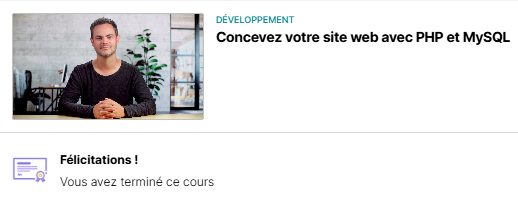
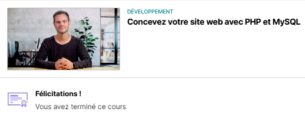
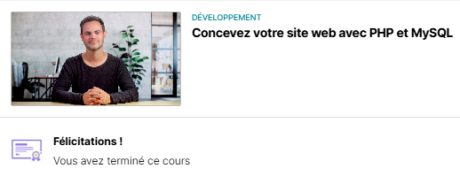

üèÖ‚Äã Certification - √âvaluation des comp√©tences en d√©veloppement d'applications
Période: Janvier 2024 - Mai 2025
Organiser son développement professionnel
Preuves - Organiser son développement professionnel :
 



Preuve des diplômes obtenus.